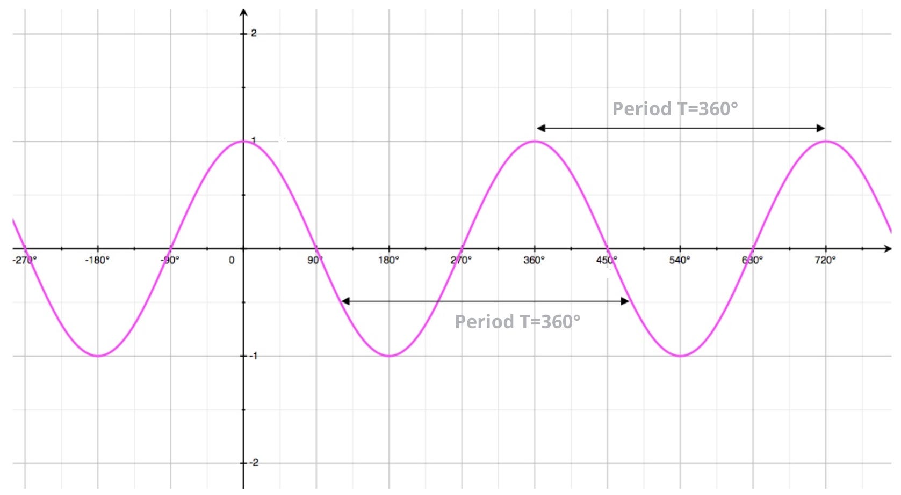

The Check Out Social Network
A Math and Data science Exercise and a Keyword that leads to a category-defining Social network


About 9,200,000 results (0.83 seconds) for twitter
About 40,000,000 results (0.67 seconds)
About 435,000 results (0.58 seconds) for Instagram
About 2,700,000 results (0.54 seconds)
for exercise, you have a set of keywords as input and a number of results, and a time of computation so it is a map from a set of size N to a couple of two real numbers. The goal is to first give an estimate of the relation between the size of the input set and each of these output numbers. With such approximative function, you have a systemic character of a search engine in this case it is google but it can be the search engine you want. But this was not about search engines at all but about social media because the set of keywords that led to this exercise is “Check out the” and the numbers above are related to this set.
We are showing things on social media, yelling “Check out the” “Check out the” “Check out the” “Check out the” “Check out the” so many time that I thought that it matters to chip a Check out only social network and once I thought if I just started working on it and adapting it as a product of Book Dojo the mail-only startup publishing data-driven books; building and operating book-driven platforms for book communities and book lovers. This social network is clearly a category-defining product with a lot of exciting features that could revolutionize Social Networking because we would be sure to always have someone check for us.
SoCheckout or Checkout Network
Does the name matter? Will you need Cosine(N)?
PS: I choose BOOK DOJO because Seth Godin said me that I really deserve my own brand rather than The reDomino Project and I thought he was right so I took back the book Dojo that was the name of our book editing and collaborating and publishing platform. You now know that Book Dojo has a social media platform will very likely read soon Book Dojo’s SaaS platform because Book Dojo has a working technology adoption theory inherited from its founder and Ceo.
if you Need to onboard yourself into Book Dojo here it is.
Soon the first data-driven book here